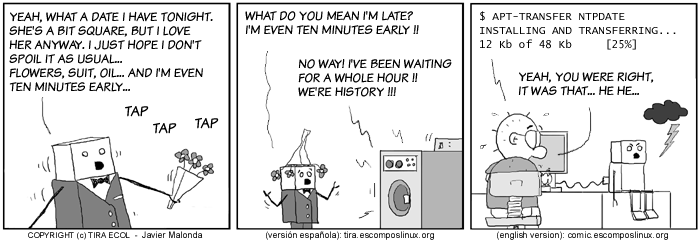
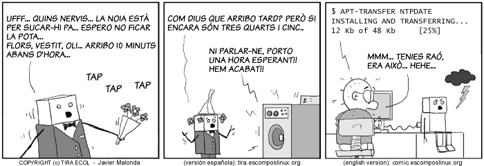
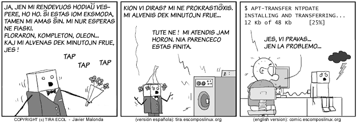

Copyright©1996-2003
Specialized Systems Consultants, Inc.
首頁(H)｜HOWTO(T)｜指南(G)｜FAQ(F)｜手冊頁(M)｜Linux電子報(L)｜LinuxFocus(S)
Linux電子報首頁｜目錄｜FAQ
讓 Linux 更加有趣呦！
The Ecol comic strip is written for escomposlinux.org (ECOL), the web
site that supports, es.comp.os.linux, the Spanish USENET newsgroup for
Linux. The strips are drawn in Spanish and then translated to English by
the author. Text commentary on this page is by LG Editor Iron. Your
browser has shrunk the images to conform to the horizontal size limit
for LG articles. For better picture quality, click on each cartoon to
see it full size.
Ecol is now available in three languages: English, Spanish
and Catalan.


Your Editor couldn't resist getting Javier to do the same cartoon in
Esperanto.

All Ecol cartoons are at tira.escomposlinux.org (Spanish), comic.escomposlinux.org (English) and http://tira.puntbarra.com/ (Catalan). The Catalan version is translated by the people who run the site; only a few episodes are currently available.
These cartoons are copyright Javier Malonda. They may be copied, linked or distributed by any means. However, you may not distribute modifications. If you link to a cartoon, please notify Javier, who would appreciate hearing from you.
Copyright © 2003, Javier Malonda. Copying license http://www.linuxgazette.com/copying.html
Published in Issue 88 of Linux Gazette, March 2003
首頁(H)｜HOWTO(T)｜指南(G)｜FAQ(F)｜手冊頁(M)｜Linux電子報(L)｜LinuxFocus(S)
{kind=link}
{kind=link}
{kind=link}
{kind=link}
{kind=link}
{kind=link}
{kind=link}
{kind=link}